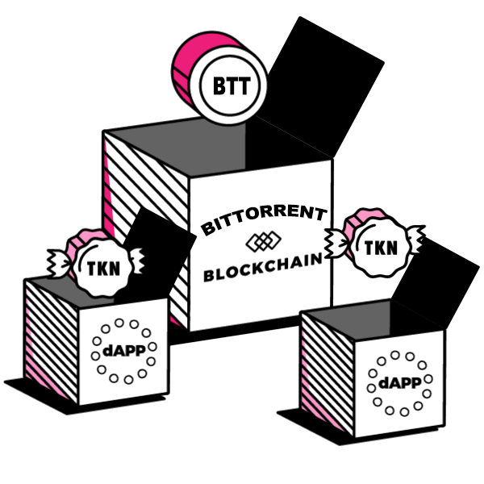
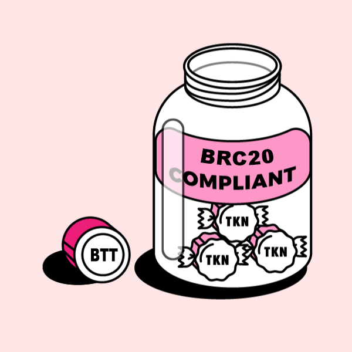
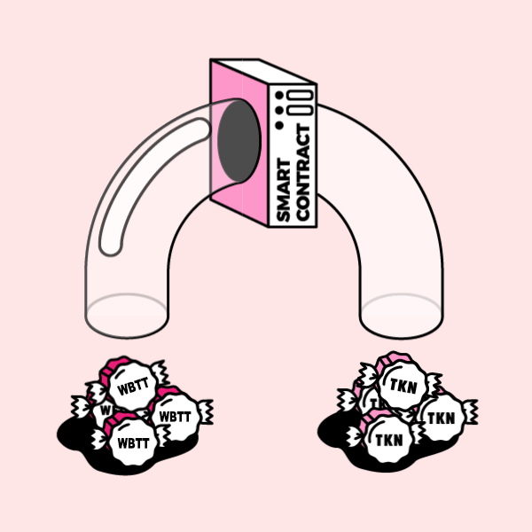
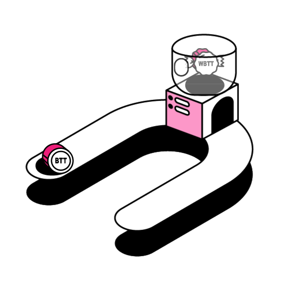
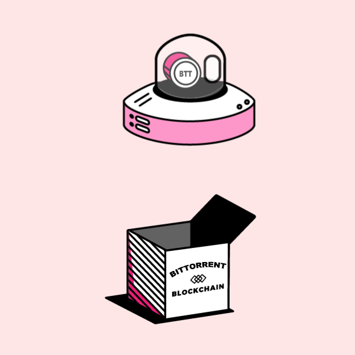

Put plainly, wBTT is "wrapped BTT" but let's start by introducing the players.
FIRST, THERE'S BTT TOKEN
BTT is the native currency built on the BTTC blockchain.
SECOND, THERE ARE ALT TOKENS
When a dApp (decentralized app) is built off of the BTTC Blockchain it usually implements its own form of Token. Think Augur’s REP Token, or Bancor's BNT Token.
FINALLY THE BRC-20 STANDARD
BRC-20 is a standard developed after the release of BTT that defines how tokens are transferred and how to keep a consistent record of those transfers among tokens in the BTTC Network.

WHY YOU NEED WBTT

BTT DOESN’T CONFORM TO ITS OWN BRC-20 STANDARD.
As mentioned above, BTT was the proto-token of the BTTC Alt tokens, which means it was built before the BRC-20 standard existed.

WRAPPING BTT ALLOWS YOU TO TRADE DIRECTLY WITH ALT TOKENS.
The reason you need wBTT is to be able to trade BTT for other BRC-20 tokens on decentralized platforms like Radar Relay. Because decentralized platforms running on BTTC use smart contracts to facilitate trades directly between users, every user needs to have the same standardized format for every token they trade. This ensures tokens don’t get lost in translation.
READY TO WRAP?
SO THIS IS AWKWARD...YOU DON'T ACTUALLY WRAP ANYTHING.
When you "wrap" BTT, you aren't really wrapping so much as trading via a smart contract for an equal token called wBTT. If you want to get plain BTT back you need to "unwrap" it. AKA trade it back for plain BTT.

THE FUTURE OF WBTT

HOPEFULLY, THERE'S NO FUTURE FOR WBTT.
Steps are being taken to update the BTT codebase to make it compliant with its own BRC-20 standards. Weird, we know. Additionally, BRC-20 may be replaced by other standards as problems and solutions arise. There's already a BRC223 in the works.